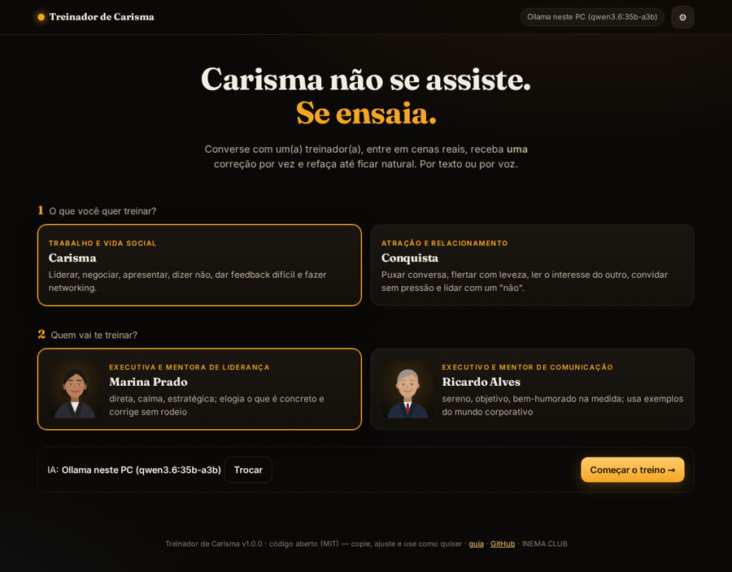
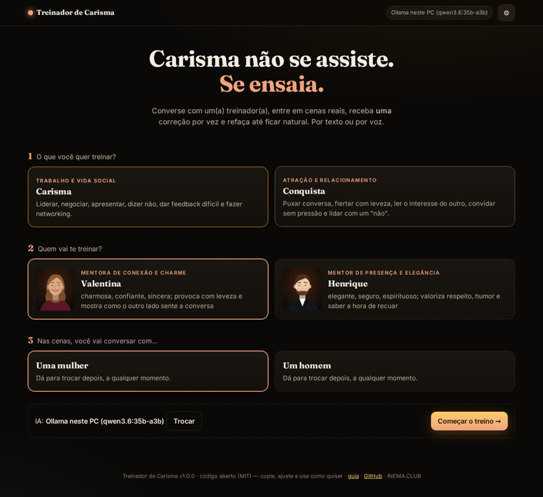
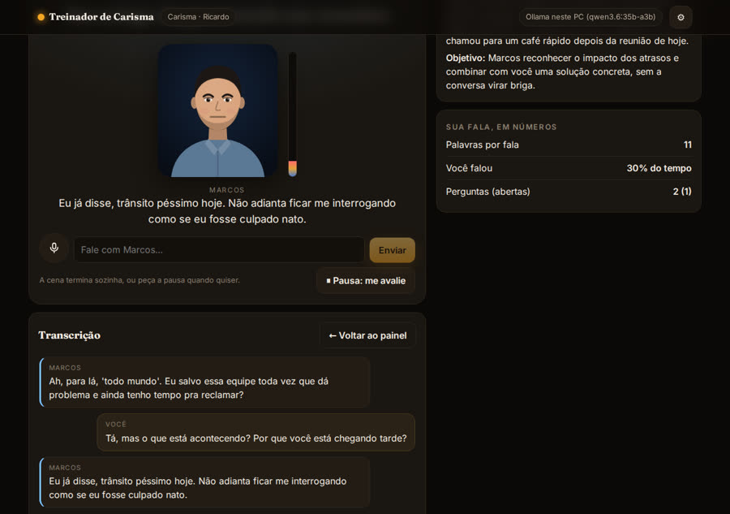
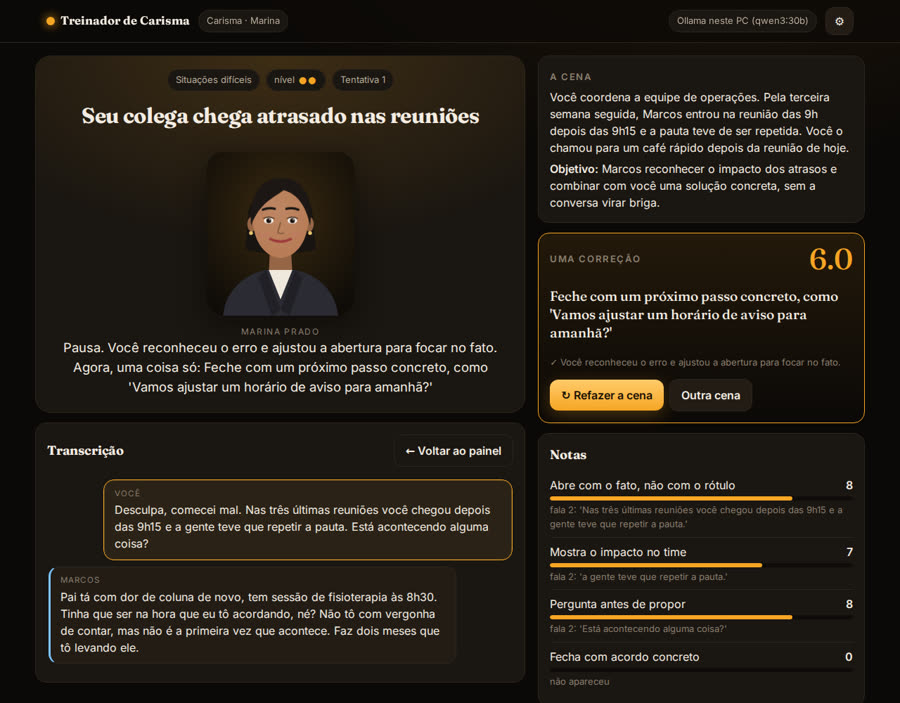
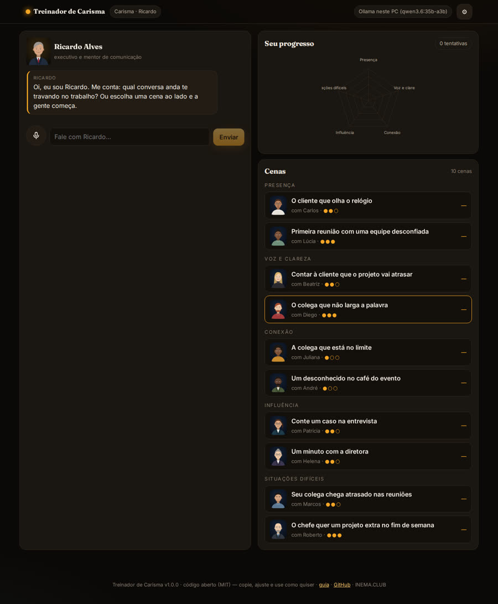
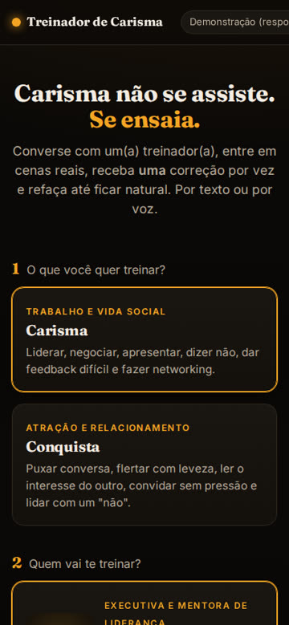

Converse com um(a) treinador(a), entre em cenas reais e receba uma correção por vez, até ficar natural. Por texto ou por voz.
O Treinador de Carisma é um app em que você treina conversas com uma inteligência artificial. Ela faz o papel de outra pessoa (um colega atrasado, um chefe exigente, alguém num café), você conversa e, no fim, um avaliador diz o que funcionou e dá uma única correção para você refazer a cena. Serve para quem quer se comunicar melhor no trabalho (modo Carisma) ou nos relacionamentos (modo Conquista). Abre direto no navegador, ou roda no seu PC com o Ollama ou com a sua assinatura do ChatGPT (Codex), do Claude ou do Gemini.
Assistir a vídeos sobre carisma não muda como você fala. O que muda é praticar, receber retorno e repetir, e é isso que o app faz.
Cada cena tem uma pessoa com humor, pressa e um estado escondido (abertura, paciência, confiança). Ela pode se fechar, se irritar ou dizer não, e um termômetro mostra a conexão subindo ou caindo.
O avaliador dá nota a cada critério da cena e cita a fala que justifica cada nota. Depois escolhe uma única coisa para você mudar na próxima tentativa.
Você refaz a mesma cena, com a pessoa no mesmo estado inicial, e vê as notas lado a lado com setas. O progresso por competência fica guardado no seu navegador.
Com a Executiva Marina ou o Executivo Ricardo: feedback difícil, dizer não ao chefe, networking, pitch em um minuto, contar um caso na entrevista, abrir uma apresentação, interromper com elegância. São 10 cenas em 5 competências.
Com a Valentina ou o Henrique: puxar conversa num café, flertar com leveza, ler sinais mistos, convidar sem pressão, lidar com um "não" e retomar contato. Você escolhe se conversa com uma mulher ou com um homem. Insistir ou pressionar tira ponto.
Três papéis de IA trabalham separados: o treinador orienta, o personagem conversa e o avaliador dá as notas. Nenhum faz o papel do outro.
Conversa livre com você: tira dúvidas, sugere a cena certa para o seu momento e explica a correção em poucas frases.
Fala curta e natural, reage ao que você diz e atualiza o próprio estado. Esconde um segredo que só conta se você perguntar bem.
Usa os critérios da cena e uma régua de calibração (uma fala nota 3 e outra nota 8). Nota sem fala citada é descartada.
É o mesmo app nas duas edições. Muda só de onde vem a IA e a voz. O que melhora no núcleo vale para as duas.
Abre pelo link, sem instalar nada. A IA vem de: um modelo pequeno rodando no próprio navegador (grátis, precisa de placa de vídeo com WebGPU), o login com a sua conta OpenRouter, a sua chave da OpenAI ou da Anthropic, ou o Ollama do seu PC. As chaves ficam só no seu navegador. A voz é a do navegador.
Roda no seu PC (ou numa VPS) com deploy/iniciar.sh. A IA pode ser o Ollama, sem API e sem internet, ou a sua assinatura do ChatGPT (Codex), do Claude ou do Gemini, usando as ferramentas de linha de comando já logadas. A voz roda local: Whisper para ouvir, Piper para falar.
Para a Edição Nuvem, só um navegador. Para a Edição Local, Python 3 e pelo menos um motor de IA.
O servidor local é em Python (FastAPI). O iniciar.sh cria o ambiente sozinho.
python3 --version git --version
O Ollama com um modelo de 8B ou mais, ou o Codex/Claude CLI logado com a sua assinatura.
ollama pull qwen3:30b # ou codex login
Whisper para ouvir e Piper com uma voz pt_BR para falar. Sem eles, o app usa a voz do navegador.
TC_INSTALAR_VOZ=1 deploy/iniciar.shUse pelo link (Edição Nuvem) ou instale no seu PC (Edição Local). O treino é igual nas duas.
Pela internet, abra o link abaixo. Para conhecer sem IA, o modo "Demonstração" responde com falas simuladas.
https://inematds.github.io/treinador-carisma/treinar/
No seu PC (Edição Local):
git clone https://github.com/inematds/treinador-carisma cd treinador-carisma deploy/iniciar.sh # abre em http://127.0.0.1:8787 TC_PORTA=8790 deploy/iniciar.sh # se a 8787 estiver ocupada
No ⚙ do topo. Na Edição Local, o app detecta sozinho o Ollama e as assinaturas logadas e mostra o que está pronto. Na Nuvem, escolha o modelo no navegador, entre com a sua conta OpenRouter ou cole a sua chave.
# Ollama direto a partir da página na internet: libere a origem OLLAMA_ORIGINS=https://inematds.github.io ollama serve
Carisma (Executiva Marina ou Executivo Ricardo) ou Conquista (Valentina ou Henrique). No Conquista, diga se você vai conversar com uma mulher ou com um homem. Dá para trocar depois, no topo.
No painel, conte o que anda te travando. O(a) treinador(a) sugere uma cena e mostra o botão "Ensaiar". Ou escolha na lista, agrupada por competência, com o nível (●●○) e a sua melhor nota.
Fale pelo microfone ou digite. A cena termina sozinha (sucesso, fracasso ou limite de falas), ou você clica em "Pausa: me avalie". Leia a correção, clique em "Refazer a cena" e compare as notas.
Cada cena é um arquivo YAML. Copie um, mude o contexto, o personagem e os critérios, valide e gere o app. A licença é MIT: pode copiar, ajustar e vender.
cp cenas/carisma/conexao/networking-evento.yaml cenas/carisma/conexao/minha-cena.yaml cd app && npm install npm run cenas # valida as cenas npm test # testes do núcleo npm run build # gera ../treinar npx vite-node scripts/calibrar.ts -- --gateway http://127.0.0.1:8787 --motor ollama --modelo qwen3:30b
Capturas da Edição Local rodando com o Ollama neste PC.






Cada fase sai nas duas edições ao mesmo tempo. O plano completo está no PLANO.md.